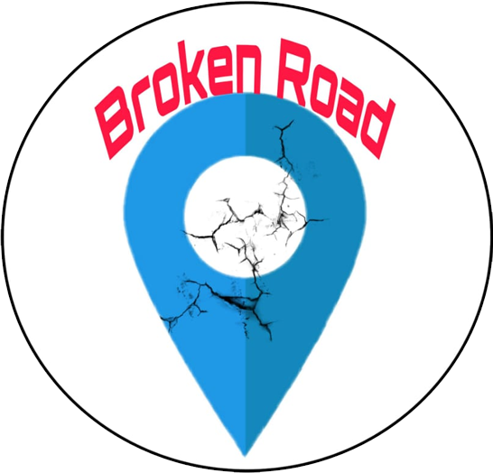

<template id="beranda.html">
  <ons-toolbar style="background:#e74c3c;color:#fff">
	<div class="left">
        <ons-toolbar-button onclick="fn.open()">
          <ons-icon icon="md-menu"></ons-icon>
        </ons-toolbar-button>
	</div>
	<div class="center" style="color:#fff;"></div>
	<div class="right">
		<ons-toolbar-button icon="md-face" style="color:#fff;"></ons-toolbar-button>
	</div>
  </ons-toolbar>
</template>